WAGESSE
Préproduction observée le 7 novembre 2026
Les captures montrent le serveur réellement en ligne. Les étapes signalées « correctif » décrivent la branche de recette, qui n'est pas encore déployée.
Objectif. Entrer dans l'administration.
Prérequis. Un compte de rôle ADMIN, distinct des comptes de recette. Ce manuel n'a pas de capture de cet écran : la recette n'a pas ouvert de session administrateur.
Résultat attendu. Les menus utilisateurs, commandes, paiements et transporteurs sont visibles.
Erreur fréquente. Un client ou un transporteur qui ouvre /admin revient à son propre tableau de bord. L'API répond 401.
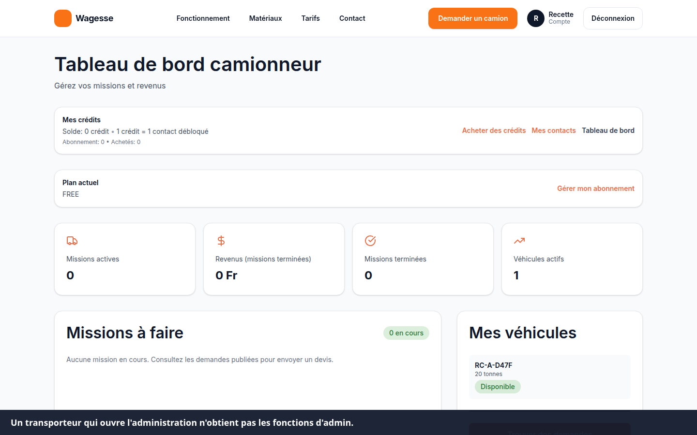
Objectif. Valider ou refuser une commande sans attribuer deux fois les crédits.
Prérequis. Une commande créée par un utilisateur dont le numéro est vérifié. Cette étape n'a pas été exécutée.
Erreur fréquente. Croire que la confirmation du client a déjà crédité le portefeuille. Tant que l'administrateur n'a pas validé, le solde reste identique.
Objectif. Ouvrir un espace expéditeur.
Prérequis. Un numéro à au moins 8 chiffres, non déjà utilisé, et un mot de passe d'au moins 8 caractères.
Résultat observé le 7 novembre. Le compte est créé, le SMS n'est pas envoyé, et l'écran de code s'affiche. Le correctif de la branche de recette doit ensuite ouvrir le tableau de bord et laisser le code pour plus tard.
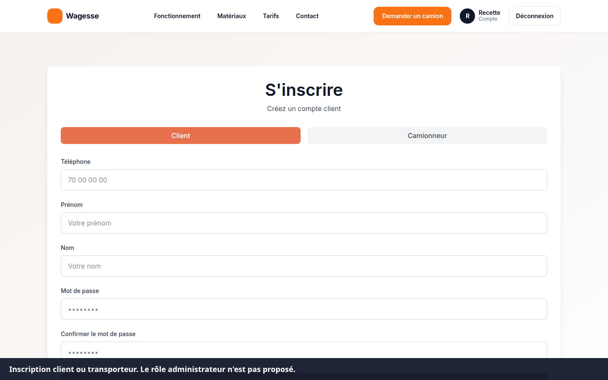
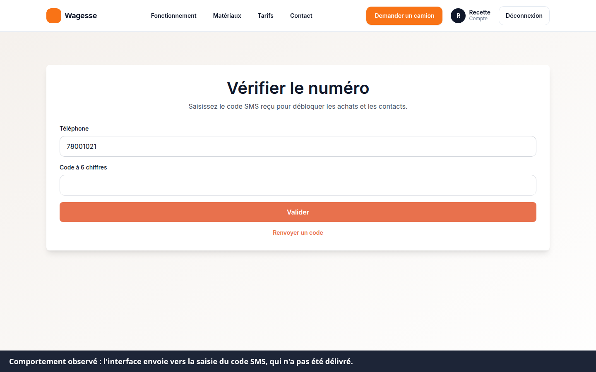
Erreur fréquente. Saisir moins de 8 chiffres, ou un numéro déjà inscrit.
Objectif. Voir les demandes, les missions et le solde.
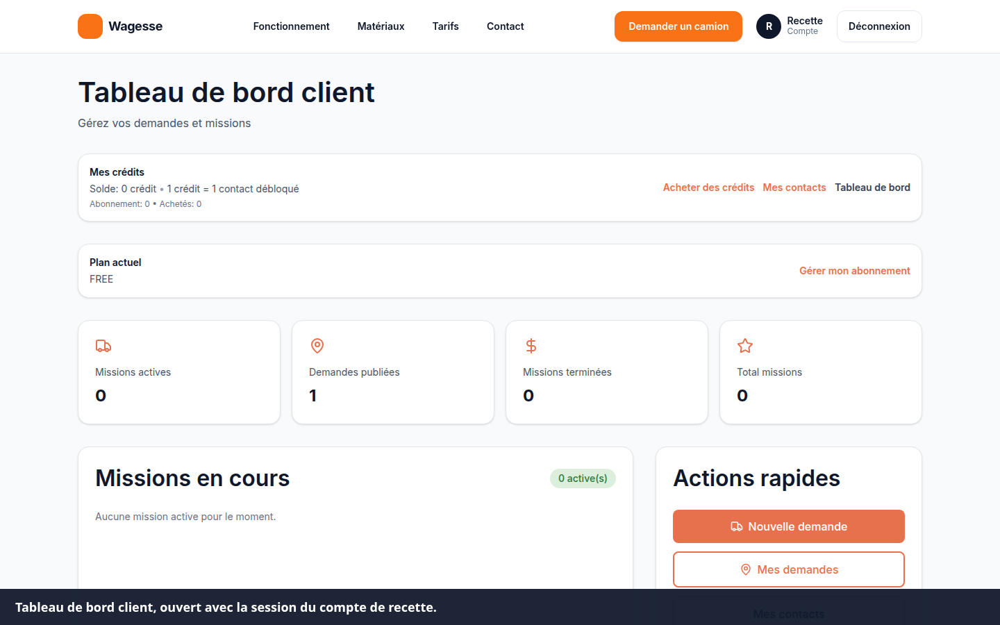
Objectif. Décrire un transport de matériau.
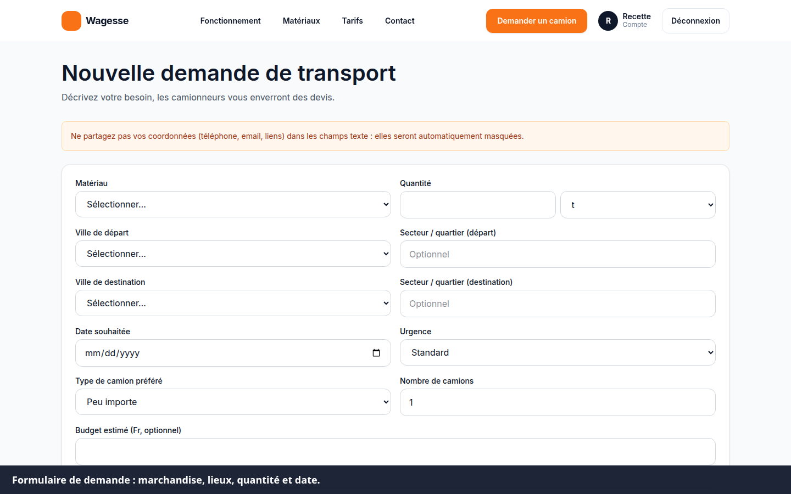
Résultat observé. Une demande « Gravier de recette », 18 tonnes, Ouagadougou vers Koudougou, a été publiée par l'API puis affichée au transporteur.
Erreur fréquente. Une date passée ou une quantité négative est refusée.
Objectif. Lire les devis, en refuser, puis en accepter un.
Résultat observé. Deux devis ont été reçus, l'un a été refusé, l'acceptation a répondu qu'il faut débloquer le contact. Aucune mission n'a été créée. Le solde est resté à 0.
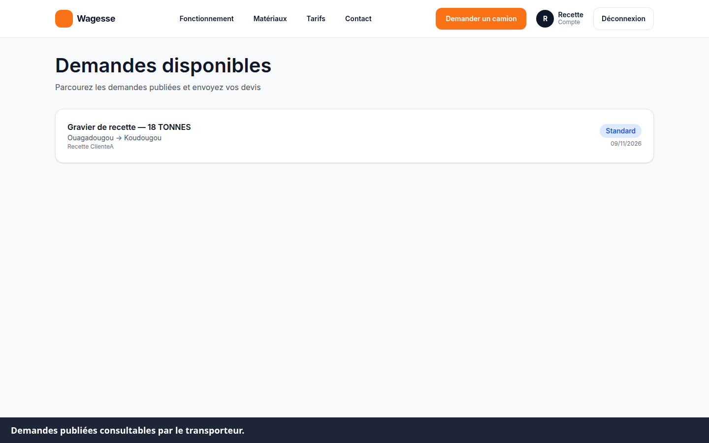
Objectif. Commander un pack sans paiement automatique.
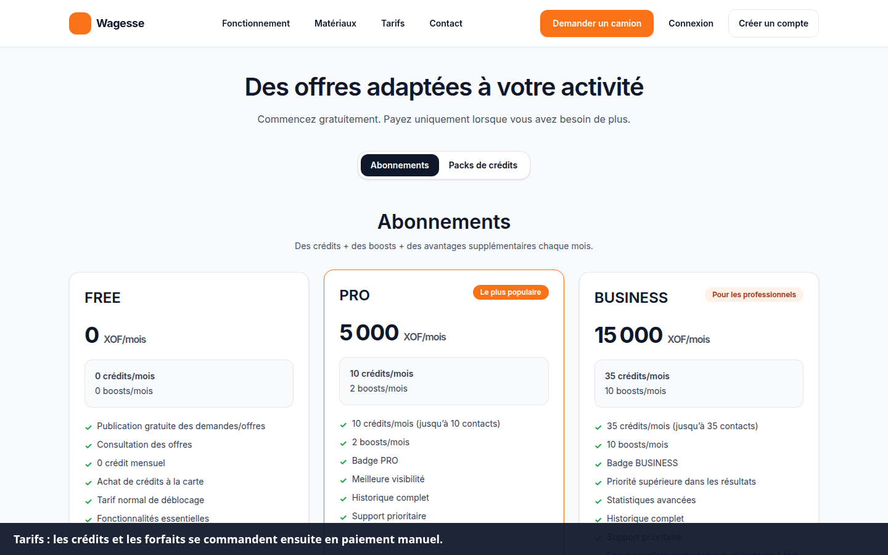
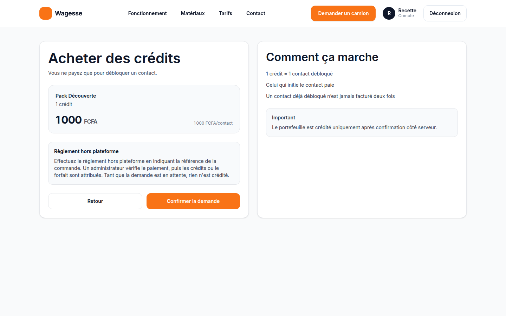
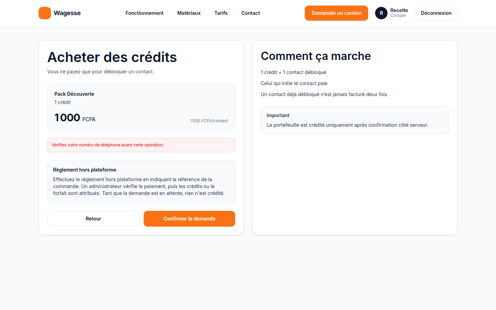
Erreur fréquente. Confirmer sans numéro vérifié. Le message « Vérifiez votre numéro de téléphone avant cette opération » s'affiche et aucun crédit n'est ajouté.
Objectif. Ouvrir un espace camionneur et indiquer la ville d'activité.
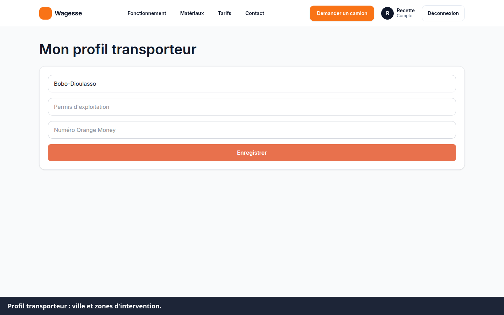
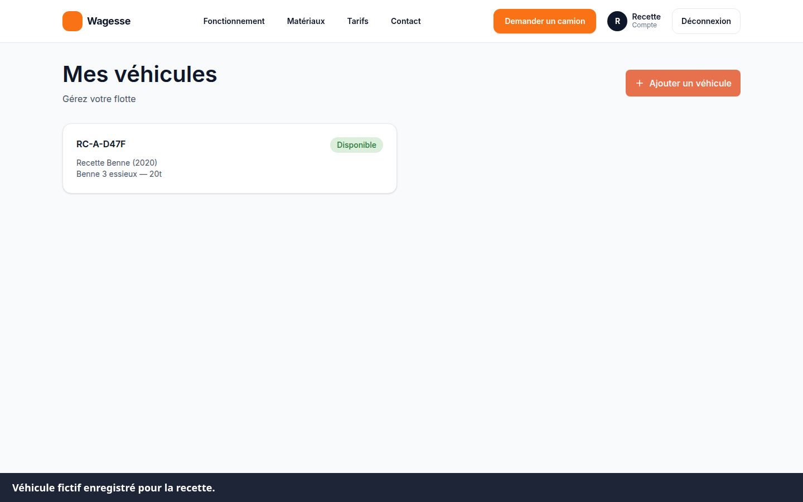
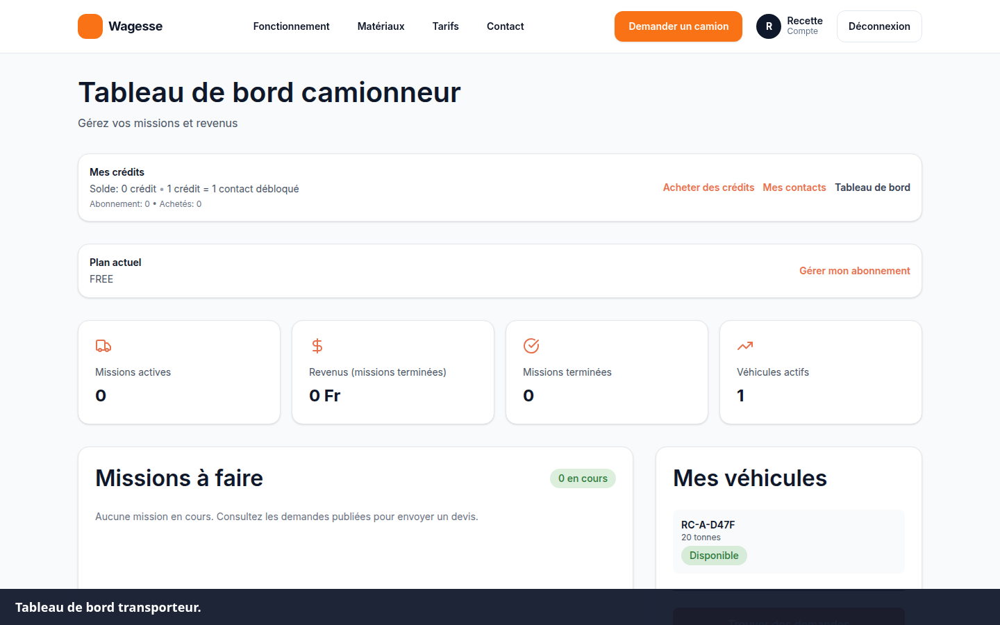
Résultat observé. Deux transporteurs ont déposé un devis. Le doublon a été refusé. Le devis restant a été retiré après le refus de l'autre.
Le déblocage du contact client et l'achat d'un forfait exigent un numéro vérifié. Sans SMS délivré, ces deux actions répondent 403. Le forfait affiché est FREE.
Demande. Besoin de transport publié par un client. Devis. Prix proposé par un transporteur. Mission. Transport créé quand un devis est accepté. Crédit. Unité qui débloque un contact. Commande manuelle. Intention de paiement en attente d'un administrateur.
Pourquoi aucun SMS n'arrive ? La préproduction n'a pas de fournisseur SMS. Le code n'est pas affiché à l'écran. Les achats restent fermés.
Mon solde a-t-il augmenté quand j'ai confirmé un pack ? Non, pas sans numéro vérifié, et pas avant la validation d'un administrateur.
Puis-je voir le numéro d'un transporteur ? Non, tant que le contact n'est pas débloqué.
Où sont les mentions légales ? Elles répondent 404 sur le serveur actuel. Elles sont rédigées dans la branche de recette, en attente de déploiement.